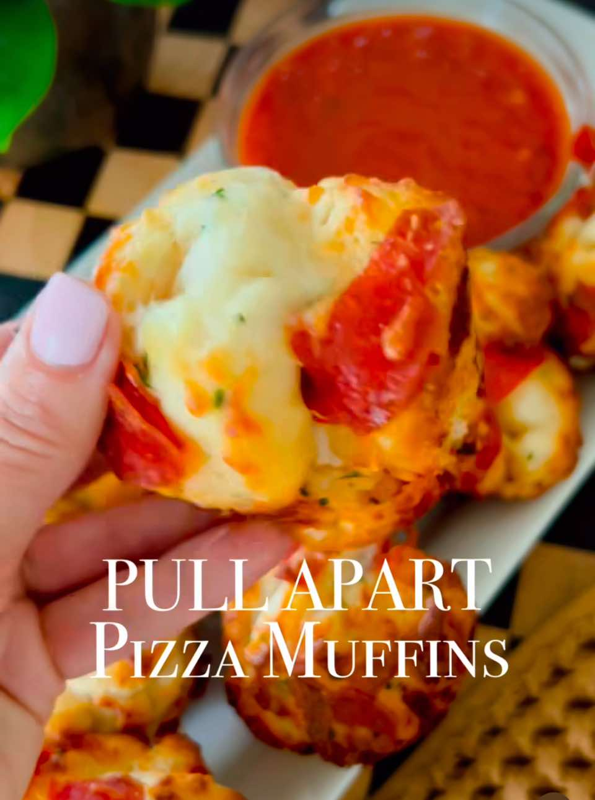

How to Make Pull-Apart Pizza Muffins!
AppetizerBread
PrepPT0S
CookPT0S

Ingredients
- 16 oz tube of jumbo biscuits (regular NOT flaky)
- 1 cup shredded mozzarella
- 1/2 cup chopped sliced pepperoni
- 3 tablespoons butter, melted
- 1/2 teaspoon garlic powder
- 1/2 teaspoon parsley flakes
- 1 cup of marinara for serving
Directions
- Preheat oven to 425 degrees.
- Spray a 12-cup muffin pan with cooking spray and set aside. Remove biscuits from tube and cut into roughly 6 pieces.
- Place chopped biscuits in a large bowl along with remaining ingredients and gently mix together. Scoop mixture evenly and place into prepared muffin tin.
- Bake on center rack in preheated oven for 12-15 minutes until golden brown.
- Cool for a few minutes then run a knife around the edge of the muffins to pop out. Serve with a side of warm marinara for dunking if desired.
Source
https://lifebyleanna.com/how-to-make-pull-apart-pizza-muffins/
This page includes Schema.org Recipe structured data for recipe importers.